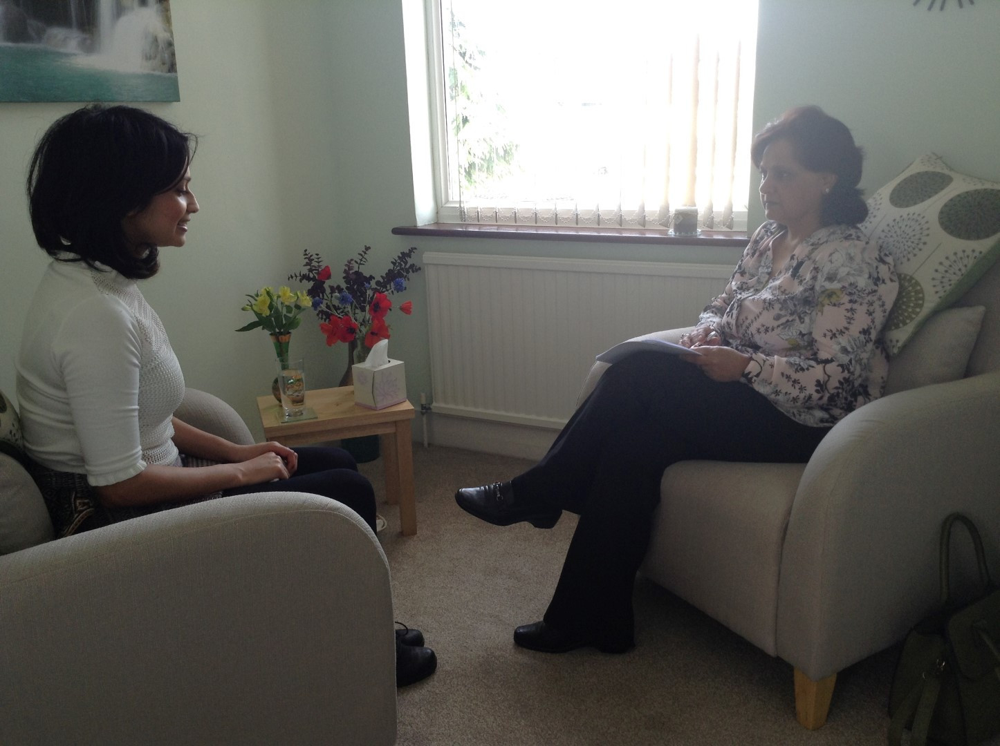

Counselling & support
Support for patients and carers
There are times in our lives when extra support can make a meaningful difference. At Sue’s House, we offer confidential counselling in a calm, welcoming setting to help people feel heard, supported and better able to cope.

Our approach
Counselling that is empathetic, informed and professional
Seeking help can feel difficult, especially during or after a cancer diagnosis. We provide a safe, non-judgemental environment where patients and carers can explore their feelings, process difficult experiences and build practical ways to cope with life’s challenges.
Safe and confidential
Sessions are delivered in a calm, supportive environment where privacy and trust are prioritised.
Tailored to you
Support is shaped around your individual experience, helping you make sense of what you are feeling.
For patients and carers
We recognise that cancer affects the whole family and can create emotional strain for both patients and carers.
Who it is for
Support designed around your needs
- People coping with a cancer diagnosis or treatment.
- Carers and family members managing emotional strain.
- Anyone seeking a compassionate space to talk, reflect and recover.